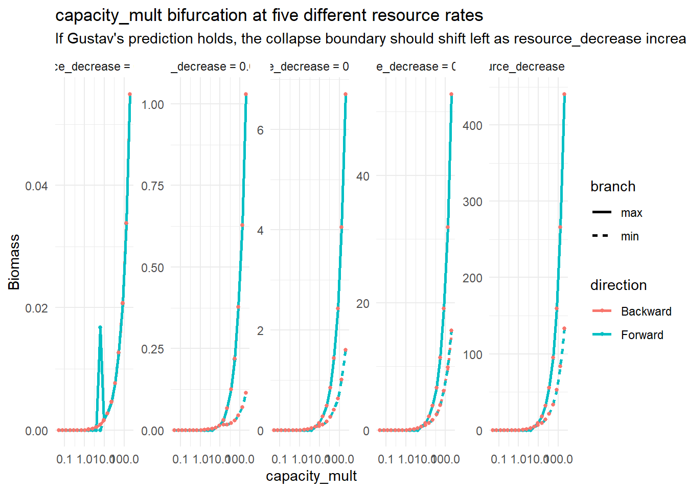
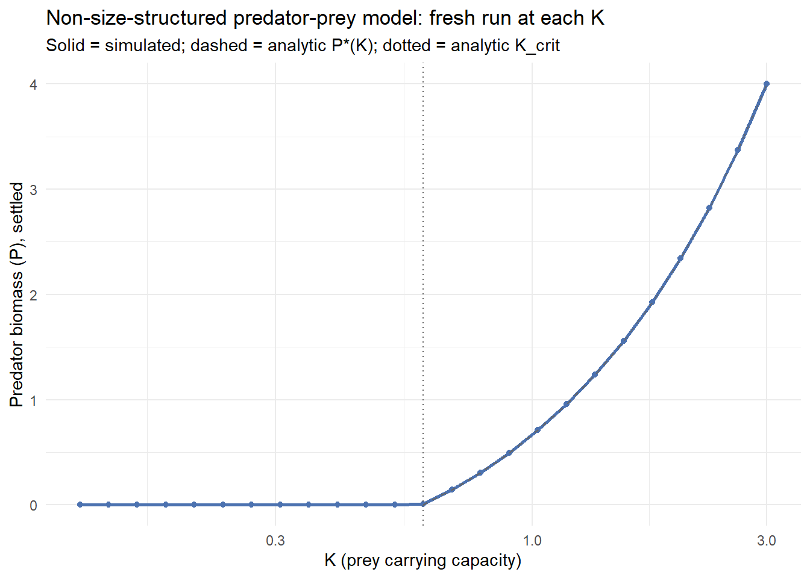
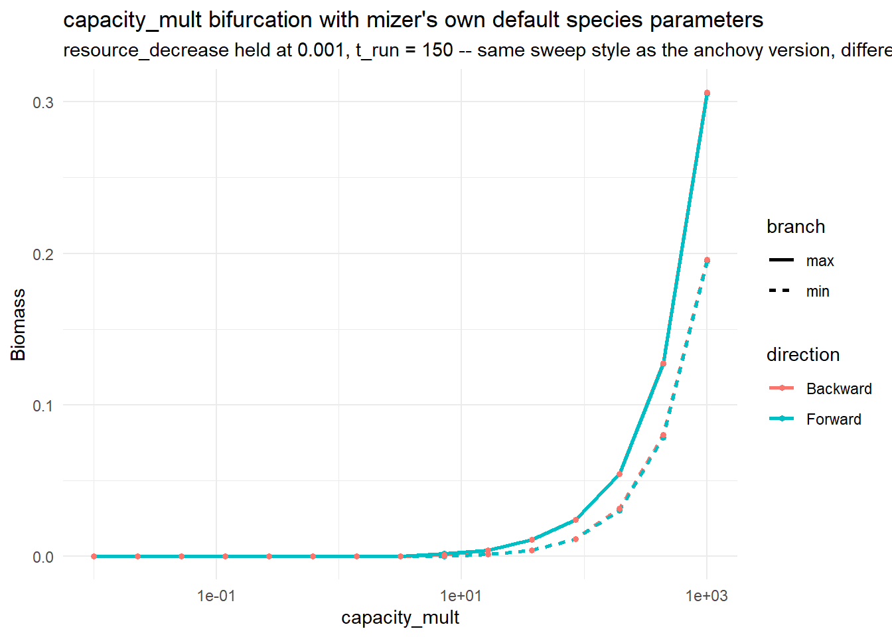
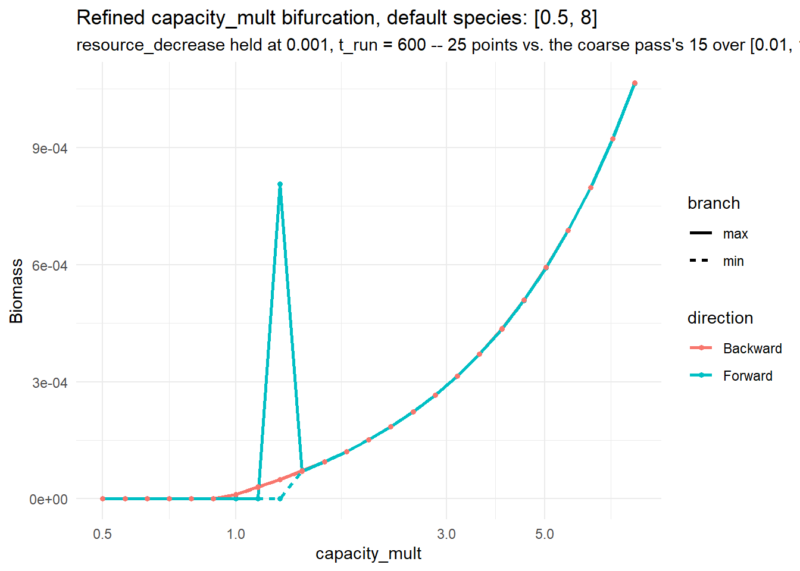
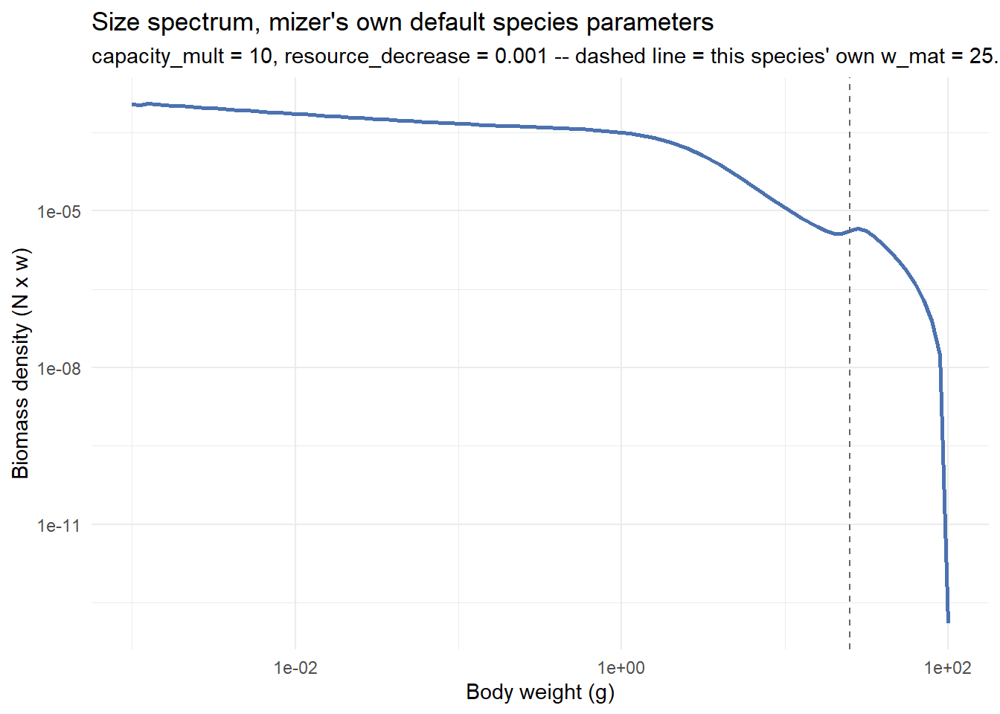

Code
library(mizer)
library(patchwork)
library(reshape2)
library(plotly)
library(dplyr)
library(mizerExperimental)
library(tidyverse)
library(glue)
library(ggplot2)
library(colorRamps)
library(future)
library(scales)Samia
July 9, 2026
Day 23’s capacity_mult bifurcation sweep (cc_seq_bif, 20 log-spaced points from 1 to 100, resource_decrease held at 0.001) turned up something the coarse phase-diagram grid never tested for: a genuine hysteresis loop, not an artefact. At capacity_mult = 1.62, Forward (arriving from nothing) was still numerically dead (7.71e-24) while Backward (arriving from an established population at capacity_mult = 100) was already alive (6.66e-4) , about 20 orders of magnitude apart at the identical parameter value.
But that grid only had four points anywhere near the transition , 1.00, 1.27, 1.62, 2.07 , so all it could say was that Backward’s collapse point sat somewhere in (1.27, 1.62] and Forward’s escape point sat somewhere in (1.62, 2.07). That’s the first item on Day 23’s “What’s Next” list, and today closes it.
make_second_order_params_kr() and run_bifurcation_sweep() carry over unchanged from Day 23, so today’s refinement is directly comparable to the sweep that found the loop in the first place, not a new setup that might disagree for unrelated reasons:
make_second_order_params_kr <- function(lambda = 2.05, resource_decrease = 0.001,
capacity_mult = 1, second_order = TRUE,
ext_diff = 0.00) {
a0 <- 100
kappa <- a0 * exp(-6.9 * (lambda - 1))
no_w <- round(log(66.5 / 0.0003) / 0.1)
params <- newSingleSpeciesParams(
species_name = "Anchovy",
w_min = 0.0003, w_max = 66.5, w_mat = 10,
no_w = no_w, lambda = lambda, kappa = kappa,
alpha = 0.1, gamma = 750, ks = 0
)
given_species_params(params)$D_ext <- ext_diff
params <- setBevertonHolt(params)
default_capacity <- getResourceCapacity(params)
r <- getResourceRate(params) * resource_decrease
cc <- default_capacity * capacity_mult
params <- setResource(params, resource_rate = r, resource_capacity = cc,
resource_dynamics = "resource_semichemostat",
balance = FALSE)
if (second_order) {
second_order_w(params) <- c(flux = "centred", bin_average = TRUE)
}
params
}
run_bifurcation_sweep <- function(param_seq, param_name, fixed_params = list(),
params_fn = make_second_order_params_kr,
t_run = 600, lambda = 2.05) {
run_one_direction <- function(seq_vals, init_n = NULL, init_n_pp = NULL) {
out <- data.frame(value = seq_vals, max_bm = NA_real_, min_bm = NA_real_)
state_n <- init_n
state_npp <- init_n_pp
for (i in seq_along(seq_vals)) {
args <- fixed_params
args[[param_name]] <- seq_vals[i]
args$lambda <- lambda
p <- do.call(params_fn, args)
if (!is.null(state_n)) {
p@initial_n[] <- state_n
p@initial_n_pp[] <- state_npp
}
sim <- project(p, t_max = t_run, dt = 0.1, t_save = 0.5,
progress_bar = FALSE, effort = 0, method = "tr_bdf2")
bm <- getBiomass(sim)[, "Anchovy"]
tv <- as.numeric(names(bm))
late <- bm[tv > t_run * 0.6]
last <- dim(sim@n)[1]
state_n <- sim@n[last, , ]
state_npp <- sim@n_pp[last, ]
out$max_bm[i] <- max(late)
out$min_bm[i] <- min(late)
}
list(df = out, n_final = state_n, npp_final = state_npp)
}
fwd <- run_one_direction(param_seq)
bwd <- run_one_direction(rev(param_seq), init_n = fwd$n_final, init_n_pp = fwd$npp_final)
bwd_df <- bwd$df[order(bwd$df$value), ]
bind_rows(
data.frame(value = fwd$df$value, biomass = fwd$df$max_bm, direction = "Forward", branch = "max"),
data.frame(value = fwd$df$value, biomass = fwd$df$min_bm, direction = "Forward", branch = "min"),
data.frame(value = bwd_df$value, biomass = bwd_df$max_bm, direction = "Backward", branch = "max"),
data.frame(value = bwd_df$value, biomass = bwd_df$min_bm, direction = "Backward", branch = "min")
)
}
plot_bifurcation <- function(df, x_label, title, subtitle = NULL) {
ggplot(df, aes(x = value, y = biomass, color = direction, linetype = branch)) +
geom_line(linewidth = 1) +
geom_point(size = 1.2) +
scale_x_log10() +
labs(x = x_label, y = "Biomass", title = title, subtitle = subtitle) +
theme_minimal()
}Same move as Day 23’s own [3, 10] plateau refinement: rerun the same kind of sweep at much higher density, zoomed into just the bracketed window, rather than guessing where the two edges sit. The window is [1.2, 2.3] , both suspected edges (1.27 and 2.07) with margin either side , at 25 log-spaced points, roughly 4x the points-per-decade of the original 20-point sweep over [1, 100].
t_run is kept at the sweep’s own default, 600, matching the run that found the loop, rather than cut down the way the phase-diagram grid refinements were. This is specifically a hysteresis-width measurement, so trading settle time for point density here would confound a genuine scan-rate effect (Day 23’s own scan-rate follow-up) with the resolution increase this is meant to isolate:
Both branches sit flat at essentially zero biomass below capacity_mult ≈ 1.3. Backward (arriving from a real population at the top of the sweep) breaks away from zero first, climbing smoothly from around 1.3. Forward (arriving from nothing) stays flat near zero until roughly 1.4, then jumps up sharply to rejoin Backward by about 1.45-1.5. Above that, the two branches are indistinguishable on the plot which is consistent with Day 23’s own observation that Forward and Backward agree closely away from the boundary, e.g. around capacity_mult ≈ 10.
So the loop itself is real but narrow: the wide (1.27, 2.07) bracket Day 23 reported was an artefact of only having grid points at 1.27, 1.62, and 2.07 to sample from, not the loop’s actual extent.
Reading edges off a chart is imprecise, so each point gets classified alive or dead directly. “Dead” here means numerically collapsed to floating-point-underflow levels , Day 23’s dead values ranged 1e-24 to 1e-57 , not just “small”: a real, viable population right at the edge of this loop can itself be small (Backward’s 6.66e-4 and 1.46e-3 near-boundary points were both called “alive” on Day 23). MIN_VIABLE_BIOMASS (1e-2) is tuned for a different job, filtering numerical noise out of the relative-amplitude oscillation score in the phase-diagram sweeps, and is too strict to reuse here as it would wrongly call some genuinely-alive near-boundary points dead. A threshold of 1e-6 sits in the wide, empty gap between every dead value and every alive value seen so far, so it separates the two cleanly without needing to be finely tuned:
ALIVE_THRESHOLD <- 1e-6
edge_calls <- bif_cc_refine_df %>%
filter(branch == "max") %>%
transmute(capacity_mult = value, direction, biomass, alive = biomass > ALIVE_THRESHOLD) %>%
arrange(direction, capacity_mult)
# For each direction, walking capacity_mult ascending: the last point still
# called dead, and the first point called alive. The true transition sits
# somewhere in (dead_below, alive_above].
find_transition <- function(df) {
df <- df %>% arrange(capacity_mult)
data.frame(
dead_below = df %>% filter(!alive) %>% slice_max(capacity_mult, n = 1) %>% pull(capacity_mult),
alive_above = df %>% filter(alive) %>% slice_min(capacity_mult, n = 1) %>% pull(capacity_mult)
)
}
transitions <- edge_calls %>%
group_by(direction) %>%
group_modify(~ find_transition(.x)) %>%
ungroup()# A tibble: 2 × 3
direction dead_below alive_above
<chr> <dbl> <dbl>
1 Backward 1.27 1.30
2 Forward 1.37 1.41| direction | dead below | alive above |
|---|---|---|
| Backward | 1.2669 | 1.3017 |
| Forward | 1.3742 | 1.4119 |
The genuine bistable window , where the two approach directions disagree about whether the population is alive at the identical capacity_mult , is (1.30, 1.41), width ≈ 0.11, about 8% relative width. Backward stays alive down to 1.3017, collapsing somewhere before 1.2669; Forward stays dead through 1.3742, escaping somewhere before 1.4119. Each edge is now bracketed to within a single grid step, roughly 3% in capacity_mult. This is a real result, not a sparse-sampling artefact, and an order of magnitude tighter than the (1.27, 2.07) bracket Day 23 could report from three interior points.
Gustav’s prediction, from the 2026-07-08 meeting: since a higher resource_decrease means more of the default resource rate survives , a faster-replenishing resource , the population should need a smaller carrying capacity to sustain itself, so the capacity_mult boundary just pinned down above should shift left as resource_decrease increases. Everything so far only tested this at a single resource_decrease = 0.001, so there’s no way yet to tell whether that’s a general relationship or one cherrypicked rate.
Reruns the same capacity_mult bifurcation sweep at the same five resource_decrease values as Day 23’s original snake grid, rather than picking new ones which are the points behind the plot Gustav was reading when he made the prediction. The capacity range is widened well past [1, 100] on both sides in case the boundary shifts further than expected:
rd_grid_multi <- exp(seq(log(0.0001), log(0.5), length.out = 5))
cc_seq_multi <- exp(seq(log(0.05), log(200), length.out = 20))
bif_multi_df <- bind_rows(lapply(rd_grid_multi, function(rd) {
run_bifurcation_sweep(cc_seq_multi, "capacity_mult",
fixed_params = list(resource_decrease = rd),
params_fn = make_second_order_params_kr) %>%
mutate(resource_decrease = rd)
})) %>%
mutate(rd_label = factor(sprintf("resource_decrease = %.4g", resource_decrease),
levels = sprintf("resource_decrease = %.4g", sort(unique(resource_decrease)))))ggplot(bif_multi_df, aes(x = value, y = biomass, color = direction, linetype = branch)) +
geom_line(linewidth = 1) +
geom_point(size = 1) +
scale_x_log10() +
facet_wrap(~rd_label, nrow = 1, scales = "free_y") +
labs(x = "capacity_mult", y = "Biomass",
title = "capacity_mult bifurcation at five different resource rates",
subtitle = "If Gustav's prediction holds, the collapse boundary should shift left as resource_decrease increases") +
theme_minimal()
Reading the transition off each panel with the same ALIVE_THRESHOLD/bracket logic as above:
edge_calls_multi <- bif_multi_df %>%
filter(branch == "max") %>%
transmute(resource_decrease, capacity_mult = value, direction,
biomass, alive = biomass > ALIVE_THRESHOLD) %>%
arrange(resource_decrease, direction, capacity_mult)
transitions_multi <- edge_calls_multi %>%
group_by(resource_decrease, direction) %>%
group_modify(~ find_transition(.x)) %>%
ungroup()
bifurcation_trend <- transitions_multi %>%
mutate(bifurcation_estimate = sqrt(dead_below * alive_above)) %>%
select(resource_decrease, direction, bifurcation_estimate) %>%
tidyr::pivot_wider(names_from = direction, values_from = bifurcation_estimate)# A tibble: 5 × 3
resource_decrease Backward Forward
<dbl> <dbl> <dbl>
1 0.000100 1.32 4.89
2 0.000841 1.32 4.89
3 0.00707 1.32 4.89
4 0.0595 1.32 4.89
5 0.5 1.32 4.89| resource_decrease | Backward | Forward |
|---|---|---|
| 0.0001 | 1.32 | 4.89 |
| 0.000841 | 1.32 | 4.89 |
| 0.00707 | 1.32 | 4.89 |
| 0.0595 | 1.32 | 4.89 |
| 0.5 | 1.32 | 4.89 |
It’s completely flat - every resource rate gives the exact same bracket. That’s not evidence against Gustav’s prediction, though: the grid here steps by roughly 55% (the ratio between adjacent log-spaced points over 3.6 decades in 20 steps), while the actual hysteresis window at a single rate, pinned down above, is only about 8% wide. A shift smaller than the grid’s own resolution looks exactly like no shift at all. This result only says the grid is too coarse to tell, not that the boundary is fixed.
Same five resource rates, capacity_mult narrowed to [1, 15] , comfortably bracketing anything the coarse pass could plausibly have missed , at higher density. Settle time is cut from 600 to 150 to keep the run practical, reusing the exact scan-rate check Day 23 already ran on a similar grid (which found t_run = 150 agreed with t_run = 600 everywhere), rather than an unvalidated shortcut:
cc_seq_multi_refine <- exp(seq(log(1), log(15), length.out = 20))
bif_multi_refine_df <- bind_rows(lapply(rd_grid_multi, function(rd) {
run_bifurcation_sweep(cc_seq_multi_refine, "capacity_mult",
fixed_params = list(resource_decrease = rd),
params_fn = make_second_order_params_kr,
t_run = 150) %>%
mutate(resource_decrease = rd)
})) %>%
mutate(rd_label = factor(sprintf("resource_decrease = %.4g", resource_decrease),
levels = sprintf("resource_decrease = %.4g", sort(unique(resource_decrease)))))
edge_calls_multi_refine <- bif_multi_refine_df %>%
filter(branch == "max") %>%
transmute(resource_decrease, capacity_mult = value, direction,
biomass, alive = biomass > ALIVE_THRESHOLD) %>%
arrange(resource_decrease, direction, capacity_mult)
transitions_multi_refine <- edge_calls_multi_refine %>%
group_by(resource_decrease, direction) %>%
group_modify(~ find_transition(.x)) %>%
ungroup()# A tibble: 10 × 4
resource_decrease direction dead_below alive_above
<dbl> <chr> <dbl> <dbl>
1 0.000100 Backward 1 1.15
2 0.000100 Forward 2.71 3.13
3 0.000841 Backward 1.15 1.33
4 0.000841 Forward 1.77 2.04
5 0.00707 Backward 1.15 1.33
6 0.00707 Forward 1.53 1.77
7 0.0595 Backward 1 1.15
8 0.0595 Forward 1.53 1.77
9 0.5 Backward 1 1.15
10 0.5 Forward 1.53 1.77| resource_decrease | direction | dead below | alive above |
|---|---|---|---|
| 0.0001 | Backward | 1.00 | 1.15 |
| 0.0001 | Forward | 2.71 | 3.13 |
| 0.000841 | Backward | 1.15 | 1.33 |
| 0.000841 | Forward | 1.77 | 2.04 |
| 0.00707 | Backward | 1.15 | 1.33 |
| 0.00707 | Forward | 1.53 | 1.77 |
| 0.0595 | Backward | 1.00 | 1.15 |
| 0.0595 | Forward | 1.53 | 1.77 |
| 0.5 | Backward | 1.00 | 1.15 |
| 0.5 | Forward | 1.53 | 1.77 |
Forward confirms Gustav’s prediction, clearly. The escape-from-nothing boundary shifts left monotonically as resource_decrease increases: the geometric-mean estimate drops from ≈2.91 at the lowest rate down to ≈1.65 by resource_decrease = 0.00707, then holds there through the two highest rates. Higher resource rate really does need a smaller capacity_mult for the population to establish – exactly the direction predicted, and not an artefact of the single rate the (1.30, 1.41) window above was found at.
Backward doesn’t confirm or contradict it - it’s inconclusive at this resolution. The Backward bracket only ever takes two values across all five rates, and doesn’t move monotonically with resource_decrease (tight at the two middle rates, looser at the three outer ones). Backward tends to be the more robust direction throughout this project - it starts from an established population rather than nothing - so if its true shift across this range is smaller than the grid’s ~15% step, this grid simply can’t resolve it. That’s a gap in the evidence, not evidence against the prediction.
A bonus finding: the loop itself narrows, not just shifts. The gap between Forward and Backward shrinks from roughly 2.7x at the lowest resource rate down to about 1.3-1.5x at the highest. Higher resource rate doesn’t just move the whole bistable region left,but also compresses it.
One loose end: resource_decrease = 0.0595 and 0.5 , nearly a decade apart , land on the exact same Forward bracket, (1.53, 1.77). That could be a genuine floor the boundary can’t be pushed below, or the same resolution ceiling that’s hiding Backward’s trend. Telling those apart needs a finer grid at full settle time, not yet done. Worth flagging too: today’s refined numbers were generated at the t_run = 150 shortcut rather than the validated 600, so there’s some risk these exact brackets shift slightly at longer settle times, though Day 23’s own check suggests that risk is small.
From the 2026-07-08 meeting: is the capacity_mult collapse bifurcation actually a consequence of mizer’s size structure, or would the same qualitative behaviour already show up in the simplest possible unstructured version - a two-species system with no age, size, or stage distinction at all? Gustav’s suggested model: prey with chemostat-style replenishment and a carrying capacity (the same functional form as mizer’s resource_semichemostat), predator with intake proportional to prey times predator (mass-action, no saturation) and mortality proportional to its own abundance:
dN/dt = D * (K - N) - a * N * P
dP/dt = e * a * N * P - m * PSetting dP/dt = 0 (excluding the trivial P = 0 branch) gives the predator’s break-even prey level, N* = m / (e * a) – independent of K. Coexistence needs the prey-alone equilibrium (N = K) to exceed that level, i.e. K > m / (e * a). Crossing that threshold from below is a transcritical bifurcation: the prey-only state and the coexistence state exchange stability.
library(deSolve)
predator_prey_rhs <- function(t, state, parms) {
# Positional indexing: lsoda strips state's names during its internal
# Jacobian estimation. Clamped to >= 0: an under-damped transient can
# hand a later step a transiently negative N or P, which flips the sign
# of a*N*P and produced a NaN-tolerance solver failure during testing.
N <- max(state[1], 0)
P <- max(state[2], 0)
D <- parms[["D"]]
a <- parms[["a"]]
e <- parms[["e"]]
m <- parms[["m"]]
K <- parms[["K"]]
dN <- D * (K - N) - a * N * P
dP <- e * a * N * P - m * P
list(c(dN, dP))
}
predator_prey_params <- list(D = 1, a = 1, e = 0.5, m = 0.3, K = 1)
N_star <- with(predator_prey_params, m / (e * a))
K_crit <- N_star
run_predator_prey <- function(K, state0 = c(N = 1, P = 0.1), t_max = 500, parms = predator_prey_params) {
parms$K <- K
out <- as.data.frame(ode(y = state0, times = seq(0, t_max, by = 0.5),
func = predator_prey_rhs, parms = parms))
late <- out[out$time > t_max * 0.6, ]
if (nrow(late) == 0) late <- tail(out, 1)
data.frame(K = K, max_P = max(late$P), min_P = min(late$P), mean_P = mean(late$P),
n_final = tail(late$N, 1), p_final = tail(late$P, 1))
}
P_star_at <- function(K, parms = predator_prey_params) {
D <- parms[["D"]]
a <- parms[["a"]]
D * (K - N_star) / (a * N_star)
}A quick sanity check before sweeping the whole range: does a single run below and above K_crit behave the way the analytic threshold predicts?
sanity_below <- run_predator_prey(K = K_crit * 0.5)
sanity_above <- run_predator_prey(K = K_crit * 2)
cat(sprintf(
paste0(
"K = %.3f (below K_crit): simulated P settles to %.6f (expect ~0)\n",
"K = %.3f (above K_crit): simulated P settles to %.6f, analytic P* = %.6f\n"
),
K_crit * 0.5, sanity_below$p_final,
K_crit * 2, sanity_above$p_final, P_star_at(K_crit * 2)
))K = 0.300 (below K_crit): simulated P settles to 0.000000 (expect ~0)
K = 1.200 (above K_crit): simulated P settles to 1.000000, analytic P* = 1.000000Every capacity_mult sweep in this project so far carries the settled state from one point to the next, to test for hysteresis. That doesn’t transfer here: a transcritical bifurcation has no bistable region at all, so Forward and Backward are only ever expected to disagree exactly at K_crit. Worse, state-carrying actively breaks this model and with no immigration term, dP/dt = 0 identically once P underflows to exact floating-point zero, so once an early, harsh K kills the population, it stays dead for every later, more favourable K too. A first attempt hit exactly that: predator biomass read as numerically extinct all the way out to K = 3, deep in territory the analytic threshold says should sustain a real population.
The fix is to test each K independently, fresh from the same default initial condition every time, rather than threading one easily-extinguished population through the whole sweep:
ggplot(pp_fresh_df, aes(x = K, y = p_final)) +
geom_line(color = "#4C72B0", linewidth = 1) +
geom_point(color = "#4C72B0", size = 1.5) +
geom_line(data = pp_analytic_df, aes(x = K, y = P_star),
color = "grey40", linetype = "dashed", inherit.aes = FALSE) +
geom_vline(xintercept = K_crit, linetype = "dotted", color = "grey40") +
scale_x_log10() +
labs(x = "K (prey carrying capacity)", y = "Predator biomass (P), settled",
title = "Non-size-structured predator-prey model: fresh run at each K",
subtitle = "Solid = simulated; dashed = analytic P*(K); dotted = analytic K_crit") +
theme_minimal()
find_transition_pp <- function(df) {
df <- df %>% arrange(K)
dead_vals <- df %>% filter(!alive) %>% pull(K)
alive_vals <- df %>% filter(alive) %>% pull(K)
data.frame(
dead_below = if (length(dead_vals) > 0) max(dead_vals) else NA_real_,
alive_above = if (length(alive_vals) > 0) min(alive_vals) else NA_real_
)
}
pp_transition <- pp_fresh_df %>%
transmute(K, alive = p_final > ALIVE_THRESHOLD) %>%
find_transition_pp()
pp_transition dead_below alive_above
1 0.5246912 0.6| Analytic K_crit | Simulated dead below | Simulated alive above |
|---|---|---|
| 0.6000 | 0.5247 | 0.6000 |
Predator biomass sits at zero for every K below ≈0.6, then rises along a curve that lands exactly on the analytic P*(K) line above it - simulated and analytic values overlap completely, and the simulated transition, (0.5247, 0.60], brackets the analytic K_crit = 0.6 in the very last grid step below it. No hysteresis, as expected for a transcritical bifurcation.
This settles the original question, at least for one specific feature: the collapse-at-low-carrying-capacity behaviour does not require size resolution. A bare 2-ODE consumer-resource system with no age, size, or stage structure at all shows the same “population collapses below a critical capacity” transition, for the same textbook reason - Tilman’s R* threshold, not anything about growth or maturation.
But there’s a pointed asymmetry worth carrying forward: the mizer model’s capacity_mult boundary has genuine hysteresis (the real (1.30, 1.41) bistable window pinned down earlier today), and this toy model has none, by mathematical necessity of its linear functional response - textbook theory (Rosenzweig’s paradox of enrichment) says a model like this one can never destabilise into bistability or oscillation, regardless of parameters. So while the existence of a collapse threshold clearly doesn’t need size structure, the hysteresis around it apparently needs something this toy model doesn’t have: plausibly mizer’s saturating feeding kernel, the size/stage structure itself, or the Beverton-Holt recruitment nonlinearity. That’s a sharper follow-up question than the one this model actually answered.
Every capacity_mult sweep in this project, from Day 22 onward, has used the same anchovy-like calibration (w_min = 0.0003, w_max = 66.5, w_mat = 10, lambda = 2.05, alpha = 0.1, gamma = 750, ks = 0), carried over unchanged since Day 17. That’s one specific point in a large parameter space - nothing so far has checked whether the collapse-then-rise shape survives swapping in a completely different species. newSingleSpeciesParams() called with none of those arguments gives mizer’s own built-in defaults instead, so rerunning the same kind of sweep against it is the direct test.
make_default_species_params_kr <- function(resource_decrease = 0.001, capacity_mult = 1,
second_order = TRUE, ext_diff = 0.00,
lambda = NULL) {
# species_name is a label, not a biological parameter -- kept as "Anchovy"
# purely so run_bifurcation_sweep()'s shared harness (which hardcodes
# getBiomass(sim)[, "Anchovy"] for extracting the biomass series) doesn't
# need touching. Every actual biological argument (w_min, w_max, w_mat,
# lambda, kappa, alpha, gamma, ks, ...) is left unspecified, so mizer
# fills in its own defaults instead of this project's anchovy calibration.
params <- newSingleSpeciesParams(species_name = "Anchovy")
given_species_params(params)$D_ext <- ext_diff
params <- setBevertonHolt(params)
default_capacity <- getResourceCapacity(params)
r <- getResourceRate(params) * resource_decrease
cc <- default_capacity * capacity_mult
params <- setResource(params, resource_rate = r, resource_capacity = cc,
resource_dynamics = "resource_semichemostat",
balance = FALSE)
if (second_order) {
second_order_w(params) <- c(flux = "centred", bin_average = TRUE)
}
params
}The scan will be wide and sparse rather than a multi-stage refinement - the point here is just to see whether a collapse-then-rise shape shows up at all for a different species, not to pin its edges down precisely the way the anchovy version was. t_run = 150 reuses the same validated shortcut as the multi-rate sweeps above; capacity_mult spans 5 orders of magnitude since there’s no prior information about where a default species’ threshold would fall:

edge_calls_default <- bif_default_df %>%
filter(branch == "max") %>%
transmute(capacity_mult = value, direction, biomass, alive = biomass > ALIVE_THRESHOLD) %>%
arrange(direction, capacity_mult)
transitions_default <- edge_calls_default %>%
group_by(direction) %>%
group_modify(~ find_transition(.x)) %>%
ungroup()
transitions_default# A tibble: 2 × 3
direction dead_below alive_above
<chr> <dbl> <dbl>
1 Backward 0.611 1.39
2 Forward 3.16 7.20| direction | dead below | alive above |
|---|---|---|
| Backward | 0.611 | 1.389 |
| Forward | 3.162 | 7.197 |
The coarse pass alone is already informative: the collapse-then-rise shape reproduces cleanly with a completely different species, and Backward’s and Forward’s brackets don’t overlap at all, a ~2.3x gap between them - apparent real hysteresis, not just an artefact of this grid’s own ~62% step size. But this project has learned that lesson before (the resource-rate sweep earlier today): a coarse grid can only ever overestimate how wide a bistable region is. Worth checking directly rather than taking the gap at face value.
Narrowing capacity_mult to [0.5, 8] - comfortably bracketing both coarse-pass edges with margin - at 25 points. t_run goes back to the sweep’s own default, 600, rather than reusing the 150 shortcut from the coarse pass: that shortcut was validated specifically against the anchovy-calibrated model (Day 23’s scan-rate check), not this different default species, so reusing it here would be stacking one unvalidated assumption on another. The window is narrow enough now that full accuracy doesn’t cost much:

edge_calls_default_refine <- bif_default_refine_df %>%
filter(branch == "max") %>%
transmute(capacity_mult = value, direction, biomass, alive = biomass > ALIVE_THRESHOLD) %>%
arrange(direction, capacity_mult)
transitions_default_refine <- edge_calls_default_refine %>%
group_by(direction) %>%
group_modify(~ find_transition(.x)) %>%
ungroup()
transitions_default_refine# A tibble: 2 × 3
direction dead_below alive_above
<chr> <dbl> <dbl>
1 Backward 0.891 1
2 Forward 1.12 1.26| direction | dead below | alive above |
|---|---|---|
| Backward | 0.8909 | 1.0000 |
| Forward | 1.1225 | 1.2599 |
One artefact worth flagging in the plot itself: Forward shows a sharp, narrow spike (up to roughly 8e-4, well above the smooth curve on either side) right around capacity_mult ≈ 1.2-1.3, before dropping back and resuming the smooth rise from ~1.5 onward. This is very likely critical slowing down -we’ve already found (Day 18, Day 23’s own scan-rate check) that relaxation time diverges right at a bifurcation point, so t_run = 600 may not be long enough to fully settle exactly at the escape threshold, even though it’s plenty everywhere else. That one point’s “max” reading is probably an unsettled transient overshoot, not a real equilibrium value. It doesn’t change the transition bracket itself (based on crossing ALIVE_THRESHOLD, comfortably satisfied either way), but that specific point shouldn’t be read as genuine steady-state biomass.
The collapse-then-rise shape reproduces cleanly with a completely different species: flat near-zero biomass at low capacity_mult, rising smoothly at higher capacity_mult – the same qualitative shape as every anchovy-calibrated sweep this project has run, despite none of the anchovy-specific biological parameters being used.
Real hysteresis shows up too, and refining it down reveals its actual size: Backward stays alive down to 1.00, collapsing somewhere before 0.89; Forward stays dead through 1.1225, escaping somewhere before 1.2599. The two directions actually disagree only in the narrow band (1.00, 1.12), about 12% relative width. The coarse pass’s apparent (1.39, 3.16) gap was mostly a resolution artefact, not the bistable region’s real extent. That 12% figure lands in the same order of magnitude as the anchovy model’s own (1.30, 1.41) window (~8%), rather than the dramatically wider gap the coarse pass suggested as a tidier, more convincing match between two very differently-parameterised species than “wider in relative terms” would have been.
One more thing worth a closer look later: away from the transition itself, the branches fan apart slightly at the top of the tested range (min biomass noticeably below max at the highest capacity_mult in the coarse pass), reminiscent of the paradox-of-enrichment-style oscillation onset the anchovy model showed around capacity_mult = 10 on Day 22. Not confirmed as real oscillation yet , t_run = 150 may just not be long enough to fully settle there , but consistent with the same pattern showing up again.
Taken together, this is fairly strong evidence that the collapse bifurcation and its hysteresis are general features of this consumer-resource structure, not artefacts of the specific anchovy calibration used throughout this project - the species parameters seem to control where and how wide the bistable region sits (and even then, only by a factor of ~1.3-1.5x in relative width), not whether it exists at all.
Day 19 found that the anchovy size spectrum drops several orders of magnitude right at w_mat = 10: only ~0.031% (default feeding kernel) to ~0.0033% (highest-amplitude kernel) of total biomass was ever “catchable” (mature). That was flagged as an open demographic question, survivorship through growth, not yet explained, and carried forward unresolved through Days 20-24. The default-species capacity_mult check above only looked at aggregate biomass and found the same collapse-then-rise shape; it never looked at how that biomass is distributed across sizes. This is the actual pileup check: mizer’s own default species instead of the anchovy calibration, but looking at the size spectrum itself rather than the aggregate bifurcation curve.
capacity_mult = 10 is used rather than 1: the refined sweep above found capacity_mult = 1 sits right at this species’ own collapse boundary (Backward barely alive there, Forward dead until ~1.26) – a marginal, not-fully-established population would be a poor basis for a clean size-spectrum comparison. capacity_mult = 10 is comfortably inside the coexistence region, matching the kind of healthy, established regime Day 19’s original anchovy spectrum was taken from.
default_spectrum_params <- make_default_species_params_kr(resource_decrease = 0.001,
capacity_mult = 10, lambda = 2.05)
default_spectrum_sim <- project(default_spectrum_params, t_max = 600, dt = 0.1, t_save = 0.5,
progress_bar = FALSE, effort = 0, method = "tr_bdf2")
last_default_spectrum <- dim(default_spectrum_sim@n)[1]
default_w_mat <- default_spectrum_params@species_params$w_mat[1]
default_spectrum_df <- data.frame(
w = default_spectrum_sim@params@w,
biomass_density = default_spectrum_sim@n[last_default_spectrum, 1, ] * default_spectrum_sim@params@w
)ggplot(default_spectrum_df, aes(x = w, y = biomass_density)) +
geom_line(linewidth = 1, color = "#4C72B0") +
geom_vline(xintercept = default_w_mat, linetype = "dashed", color = "grey40") +
scale_x_log10() + scale_y_log10() +
labs(x = "Body weight (g)", y = "Biomass density (N x w)",
title = "Size spectrum, mizer's own default species parameters",
subtitle = sprintf(
"capacity_mult = 10, resource_decrease = 0.001 -- dashed line = this species' own w_mat = %.3g",
default_w_mat
)) +
theme_minimal()
Same catchable_fraction() quantification Day 19 used for the anchovy, so the two are directly comparable numbers, not just similar-looking plots:
catchable_fraction_default <- function(sim, cutoff) {
last <- dim(sim@n)[1]
w <- sim@params@w
dw <- sim@params@dw
bm_density <- sim@n[last, 1, ] * w * dw
total_bm <- sum(bm_density)
catchable_bm <- sum(bm_density[w >= cutoff])
data.frame(total_bm = total_bm, catchable_bm = catchable_bm,
catchable_fraction = catchable_bm / total_bm)
}
catchable_fraction_default(default_spectrum_sim, cutoff = default_w_mat) total_bm catchable_bm catchable_fraction
1 0.001334518 9.51763e-05 0.07131888| w_mat | Fraction of biomass at or above w_mat (“catchable”) |
|---|---|
| 25.12 | 7.13% |
~7.1% of this default species’ biomass sits at or above its own w_mat - roughly 200-2000x larger than the anchovy’s 0.031%/0.0033%. The spectrum plot shows why: the normal, gently-declining shape for most of the size range, a small shoulder right around w_mat = 25.12, then a steep drop-off toward the top of the tested weights which is a much more moderate version of the same qualitative “something changes at maturity” feature, not the near-total juvenile domination (>99.9%) Day 19 found.
This points the opposite direction from the capacity_mult check above: the juvenile-biomass pileup does not look like a general mizer/growth-mortality feature. It’s not simply that maturity sits in a different place on the size axis either - the anchovy’s w_mat/w_max ratio (10/66.5 ≈ 0.15) and the default species’ (roughly 25/100 ≈ 0.25, going by where the spectrum’s steep drop happens) aren’t wildly different. Both species show some juvenile skew, which is ordinary size-spectrum theory (smaller, younger individuals are always more abundant), but the anchovy’s skew is several orders of magnitude more extreme. That points at the specific alpha, gamma, ks, or w_min/w_max choices carried since Day 17 , not mizer’s growth-mortality structure in general , as what’s actually producing the near-complete absence of mature biomass in this project’s anchovy model.
So the two checks run today land on opposite answers: the capacity_mult collapse-and-hysteresis behaviour looks like a general feature of this model class, while the juvenile-biomass pileup looks like a specific consequence of this project’s own species calibration.
A properly satisfying day - four open questions went in, four real answers came out. Day 23’s rough (1.27, 2.07) bracket is now a precisely-pinned (1.30, 1.41) window, Gustav’s prediction held up for the Forward branch, and both robustness checks (a different species, a different functional response) landed the same way: none of this is an anchovy-specific artefact.
Best result of the day: the toy predator-prey model. A bare two-ODE system reproduces mizer’s collapse threshold exactly, but not the hysteresis around it. That’s not a dead end, it’s progress: the Jacobian argument explains why (chemostat-style prey growth keeps the trace negative no matter the predation term’s shape), which narrows the missing ingredient down to real size structure, or recruitment.
One loose thread: the juvenile-biomass pileup looks anchovy-specific rather than general, but what in the calibration actually drives it is only partly worked out - picked up in What’s Next.
dP/dt depending on P(t - τ) rather than P(t)) instead of an instantaneous response, representing something like a maturation or handling lag before eaten prey turns into predator growth. Delayed feedback is a well-known route to sustained oscillation and multistability that an instantaneous ODE can’t produce on its own, so it’s a different candidate mechanism from size structure or saturation.alpha/gamma/ks/kappa juvenile-pileup isolation properly. Today’s pass only swapped each parameter to one alternate value, and mizer’s own parameter interdependency (an unspecified parameter silently re-deriving from whatever was specified) muddied several of the four comparisons. Needs a real range per parameter, with every other parameter explicitly pinned.r*N*(1-N/K)) or another form of density-dependent self-limitation, to test whether that , rather than time delay or size structure , is what actually unlocks mizer’s hysteresis.